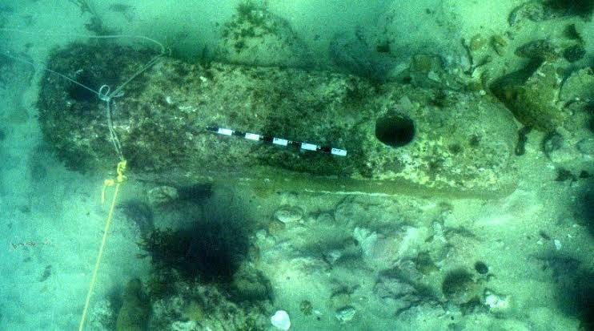
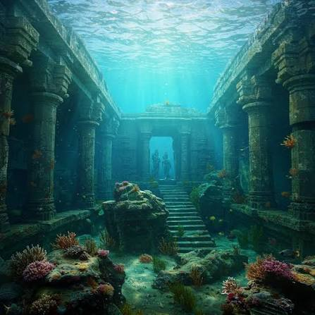
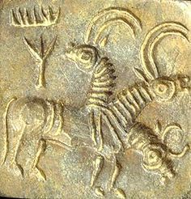
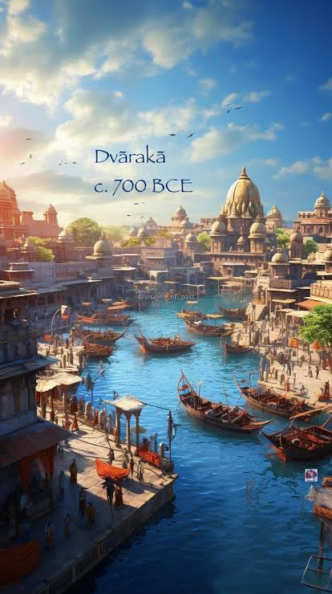

Visual Exploration Gallery

Ancient Three-Holed Stone Anchor

Underwater Block Masonry

Corrosion-Resistant Trade Seal

Reconstructed Coastal Map of Dwarka
Maritime Engineering & Ancient Metallurgy



